Projects
Explore my projects showcasing DevOps practices and automation.
Project 1: Automated Web App Deployment Using Jenkins Freestyle Project with GitHub, Maven, Tomcat, and AWS EC2
Deployment of Web Application Using GitHub, Maven, Jenkins Freestyle Project, Tomcat, and AWS EC2
Project-1
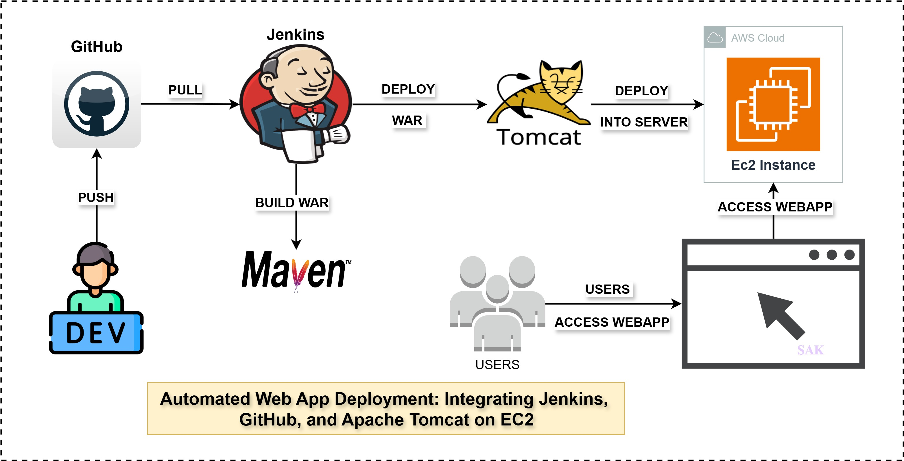
- Version control: GitHub for source code management and version control
- Build: Maven for compiling, testing, and packaging Java applications
- CI/CD Pipeline: Jenkins Freestyle Project for building, testing, and deploying the application
- Deployment: Apache Tomcat server hosted on an AWS EC2 instance
Project 2: Automated Web App Deployment Using Jenkins Freestyle Project with GitHub, Maven, Ansible, Tomcat, and AWS EC2
Deployment of Web Application Using GitHub, Maven, Jenkins Freestyle Project, Ansible, Tomcat, and AWS EC2
Project-2
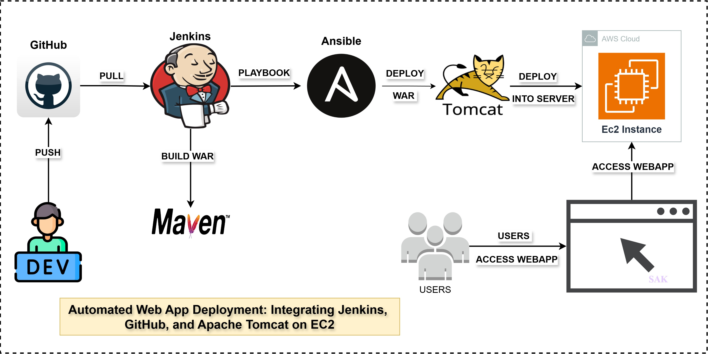
- Version control: GitHub for source code management and version control
- Build: Maven for compiling, testing, and packaging Java applications
- CI/CD Pipeline: Jenkins Freestyle Project for building, testing, and deploying the application
- Configuration Management: Ansible for automating deployment and configuration on the EC2 instance
- Deployment: Apache Tomcat server hosted on an AWS EC2 instance
Project 3: Deployment of webapp using GitHub, Maven, Jenkins, Ansible, and Docker
Project demonstrates a complete Deployment:
Project-3

- Version control: GitHub for source code management and version control
- Build: Maven for compiling, testing, and packaging Java applications
- CI/CD: Jenkins for automated build, test, and deployment pipelines
- Configuration management: Ansible for infrastructure provisioning and application deployment
- Containerization: Docker for creating, managing, and orchestrating application containers
- Deployment: deployment done into Tomcat Docker container
Project 4: Web Application Deployment to Apache Tomcat with Docker, DockerHub, and Ansible
Project demonstrates a complete Deployment:
Project-4
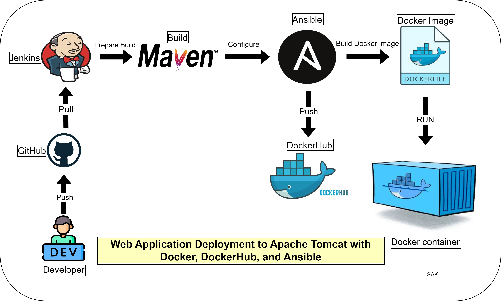
- Cloud Infrastructure: AWS for hosting the entire infrastructure
- Operating System: Linux for running the servers and containers
- Version Control: Git & GitHub for source code management and collaboration
- Containerization: Docker for creating and managing application containers
- Container Registry: DockerHub for storing and distributing Docker images
- Application Server: Apache Tomcat for hosting the Java web application
- Configuration Management: Ansible for infrastructure provisioning and application deployment
Project 5: Multi-Server Web Application Deployment with Docker, DockerHub, and Ansible
Project demonstrates a complete Multi-Server Deployment:
Project-5
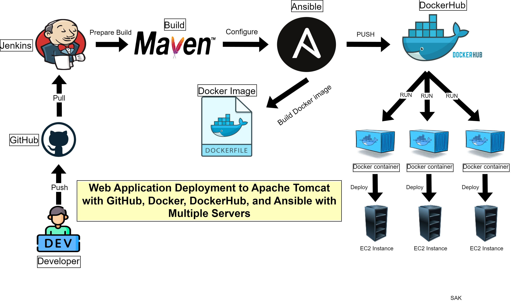
- Cloud Infrastructure: AWS for hosting, load balancing, and auto-scaling
- Operating System & Version Control: Linux, Git & GitHub
- Containerization & Registry: Docker, DockerHub
- Application Server: Apache Tomcat on multiple instances
- Configuration Management: Ansible for multi-server provisioning and deployment
Project 6: Continuous Integration and Deployment with GitHub, Maven, Jenkins, Spring, AWS EC2, and RDS
Project demonstrates a complete CI/CD pipeline for a Spring application with AWS RDS database:
Project-6
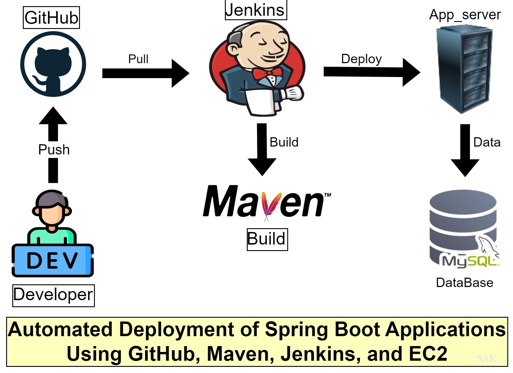
- Version Control: GitHub for source code management and collaboration
- Build Tool: Maven for dependency management and building the Spring application
- CI/CD: Jenkins for automating the build, test, and deployment processes
- Application Framework: Spring for developing the Java-based web application
- Cloud Infrastructure: AWS EC2 for hosting the application
- Database: AWS RDS (Relational Database Service) for storing and managing application data
- Deployment: Automated deployment to AWS EC2 instances
Project 7: CI/CD for Spring Boot: Deploying with GitHub, Maven, Jenkins, Docker, Mysql and EC2
Project demonstrates a complete CI/CD pipeline for a Spring Boot application with MySQL database and Docker container:
Project-7
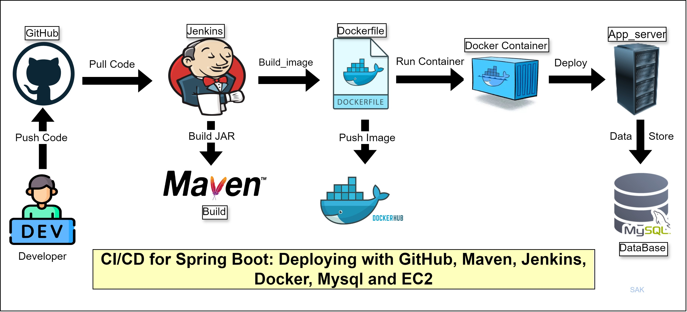
- Version Control: GitHub for source code management and collaboration
- Build Tool: Maven for dependency management and building the Spring Boot application
- CI/CD: Jenkins for automating the build, test, and deployment processes
- Application Framework: Spring Boot for developing the Java-based web application
- Cloud Infrastructure: AWS EC2 for hosting the application
- Database: MySQL for storing and managing application data
- Containerization: Docker for packaging the application and its dependencies
- Deployment: Automated deployment of Docker containers to AWS EC2 instances
Project 8: Kubernetes-Based Deployment of a Spring Boot Application with External MySQL Integration
Project demonstrates a Kubernetes-based deployment of a Spring Boot application with external MySQL database integration:
Project-8

- Version Control: GitHub for source code management and collaboration
- Build Tool: Maven for dependency management and building the Spring Boot application
- CI/CD: Jenkins for automating the build, test, and deployment processes
- Application Framework: Spring Boot for developing the Java-based web application
- Container Orchestration: Kubernetes for managing and scaling containerized applications
- Cloud Infrastructure: Kubernetes server setup for hosting the Kubernetes cluster
- Database: External MySQL database for storing and managing application data
- Containerization: Docker for packaging the application and its dependencies
- Deployment: Automated deployment of Docker containers to Kubernetes pods
Special Projects
DevOps Meets DevSecOps: Automating Security for Continuous Delivery
Spc Project 1: Automated Java Web App Deployment to Tomcat with CI/CD Using GitHub, Jenkins, Nexus, EC2, and Maven
This project demonstrates a CI/CD pipeline for deploying a Java web application to a Tomcat server on AWS EC2 using GitHub, Jenkins, Nexus, and Maven:
Spc Project-1
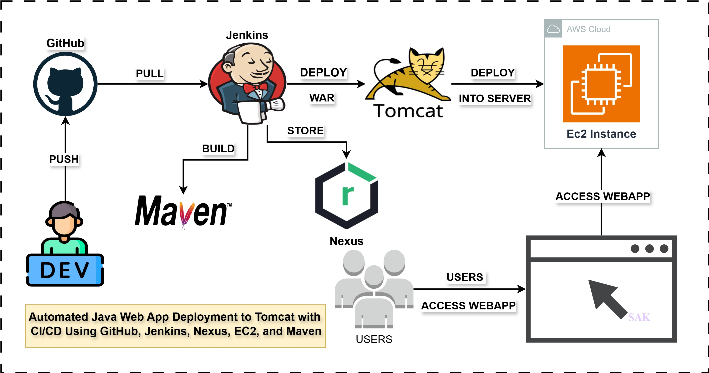
- Version Control: GitHub for managing the source code and enabling collaboration
- Build Tool: Maven for dependency management and building the Java application
- Artifact Repository: Nexus for storing and managing build artifacts
- CI/CD: Jenkins for automating the build, testing, and deployment stages
- Application Server: Apache Tomcat for deploying and running the Java web application
- Cloud Infrastructure: AWS EC2 instance configured for Tomcat hosting
- Deployment: Automated deployment of the Java application to the Tomcat server on EC2
Spc Project 2: Automated Deployment of Spring Application with CI/CD Using GitHub, Jenkins, SonarQube, EC2, and Maven with MySQL Database
This project demonstrates a CI/CD pipeline for deploying a Spring application on AWS EC2 using GitHub for version control, Jenkins for automation, SonarQube for code quality, Maven for build management, and MySQL for database integration:
Spc Project-2
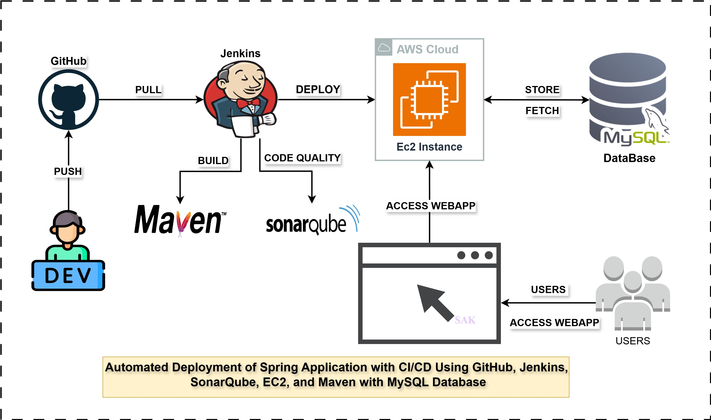
- Version Control: GitHub for source code management and collaboration
- Build Tool: Maven for dependency management and building the Spring application
- Code Quality: SonarQube for static code analysis and ensuring code quality standards
- CI/CD: Jenkins for automating the build, testing, code quality checks, and deployment processes
- Cloud Infrastructure: AWS EC2 instance for hosting the Spring application
- Database: MySQL database for storing and managing application data
- Deployment: Automated deployment of the Spring application to an EC2 instance
Spc Project 3: Automated Deployment of Spring Application with CI/CD Using GitHub, Jenkins, SonarQube, Nexus, EC2, Maven, and MySQL Database
This project demonstrates a fully automated CI/CD pipeline for deploying a Spring Boot application to AWS EC2 using GitHub for version control, Jenkins for automation, SonarQube for code quality checks, Nexus Repository Manager for artifact management, Maven for build management, and MySQL for database integration.
Spc Project-3
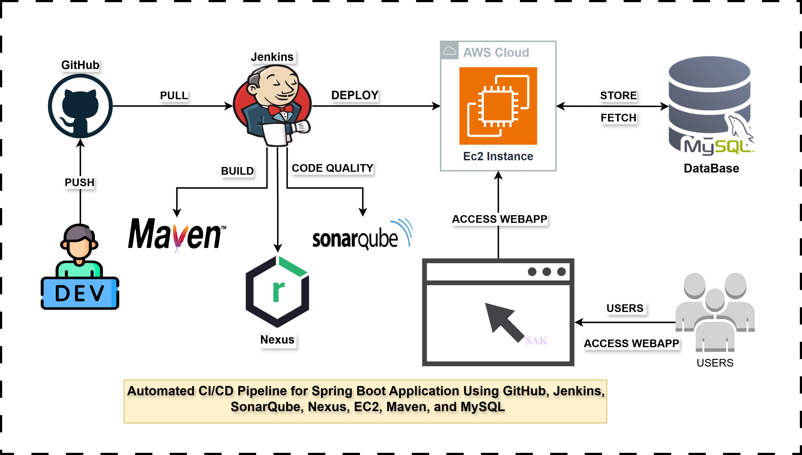
- Version Control: GitHub for source code management and collaboration, ensuring easy tracking of code changes and efficient collaboration between developers.
- Build Tool: Maven for dependency management and building the Spring Boot application, ensuring that all dependencies are resolved and the build is consistent across environments.
- Code Quality: SonarQube for static code analysis to ensure code quality standards are maintained, flagging bugs, vulnerabilities, and code smells early in the development cycle.
- CI/CD: Jenkins for automating the build, testing, code quality checks, and deployment processes. Jenkins automates the entire pipeline, ensuring faster and more reliable releases.
- Artifact Management: Nexus Repository Manager to store and manage build artifacts (like JAR files), ensuring that only tested and validated versions of the application are used for deployment.
- Cloud Infrastructure: AWS EC2 instance for hosting the Spring Boot application, providing a scalable and secure environment for the deployed application.
- Database: MySQL for storing and managing application data, ensuring efficient relational data handling and integration with the Spring application.
- Deployment: Automated deployment of the Spring Boot application to the EC2 instance, reducing manual intervention and ensuring consistency between environments.
AWS (Amazon Web Services)
AWS is a comprehensive cloud computing platform offering a wide range of services including computing power, storage options, networking, and databases. It provides scalable and flexible solutions for businesses of all sizes.
Seamless Integration of Amazon EC2 and S3 for Scalable Cloud Solutions
This project demonstrates the integration of **Amazon EC2** instances with **Amazon S3** storage, allowing for seamless management of cloud resources.
AWS EC2 and S3 Integration Architecture
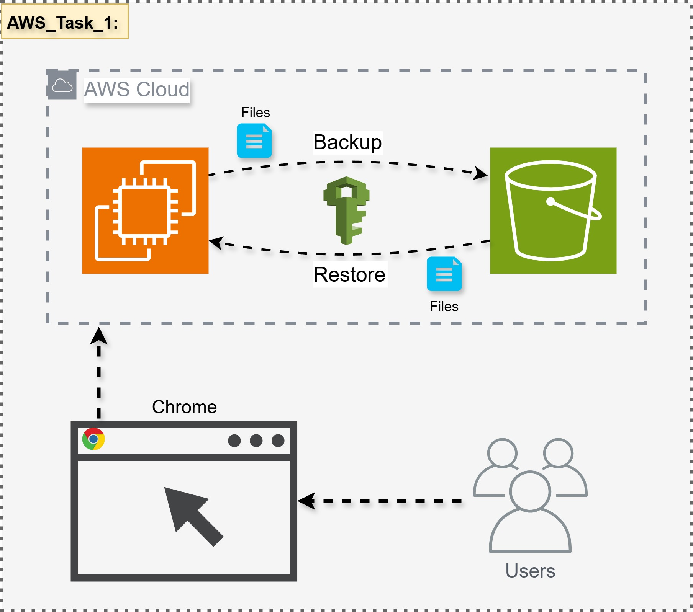
- Amazon EC2: The **Amazon EC2** instances serve as the compute resources, running applications, web servers, and services that require dynamic scaling and high availability. EC2 instances are provisioned within the VPC to ensure proper security and access controls.
- Amazon S3: **Amazon S3** is used for scalable object storage. It provides durable and highly available storage for storing large datasets, backups, media files, and other unstructured data. S3 is integrated with EC2 instances for efficient data retrieval and storage.
- Security Groups: Security Groups are configured for both EC2 instances and S3 buckets, defining the allowed inbound and outbound traffic. This ensures that only trusted sources can access the resources, and tight security policies are enforced.
- IAM Roles and Policies: **AWS Identity and Access Management (IAM)** roles and policies are defined to manage access between EC2 instances, S3, and other AWS resources. These policies ensure the principle of least privilege and secure access control.
- Data Backup and Storage: **S3** serves as a centralized backup repository for critical application data, with automated scripts running on EC2 instances to regularly back up data to S3, ensuring data durability and recovery in case of failure.
Building Secure and Scalable Networks with Amazon Virtual Private Cloud (VPC)
This project demonstrates how to design and deploy secure, scalable network architectures using **Amazon Virtual Private Cloud (VPC)**. The VPC allows you to isolate cloud resources in a private network, offering enhanced security, custom networking, and greater control over your AWS environment.
AWS VPC Architecture
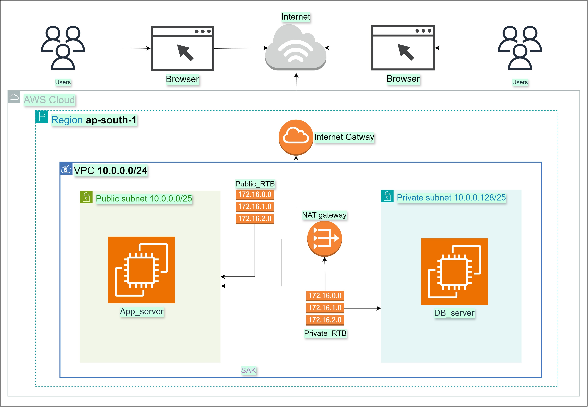
- VPC (Virtual Private Cloud): Amazon **VPC** is used to isolate cloud resources, providing a secure network environment for EC2 instances, databases, and other resources. It helps you define your own network topology, subnets, and route tables to ensure smooth communication between resources while maintaining high security.
- Subnets and CIDR Blocks: **VPC** allows you to create both **public** and **private subnets**, offering full control over IP address ranges using **CIDR blocks** (Classless Inter-Domain Routing). Public subnets are used for resources that need internet access, while private subnets are designed for internal services like databases.
- Internet Gateway and NAT Gateway: The VPC setup includes an **Internet Gateway** for outbound access from public subnets and a **NAT Gateway** for outbound internet access from private subnets. This provides controlled access while ensuring security for internal resources.
- Security Groups **Security Groups** is configured to enforce tight access control policies, ensuring that only authorized traffic can reach the resources within the VPC. Security groups are stateful
{kind=link}
{kind=link}
{kind=link}
{kind=link}
{kind=link}
{kind=link}
{kind=link}
{kind=link}
{kind=link}
{kind=link}
{kind=link}